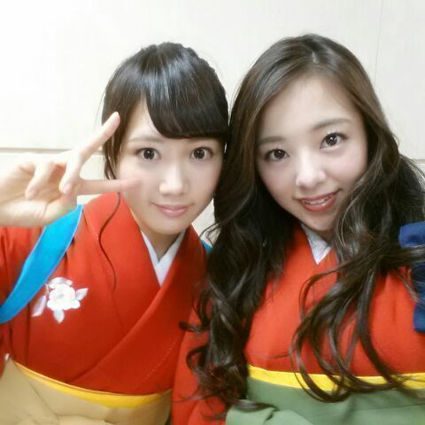

| 2014/09 25 Thu | 〜お茶会 カルタ大会〜/// 肩凝りさん？ Rotty |
おはようございます..* ろってぃーです。。。

23日(火)は お茶会、そしてカルタ大会でした !!!
それで この袴姿なわけです。。。
どうでしょうか。
似合ってますかね(*´・∪・)？
色の組み合わせは自分で選べました..*
赤 抹茶 そして、黄の帯に 紺のタスキ。
来てくれた皆 ありがとう..*
初めての方も 当選して来てくれて 本当に嬉しかったです(#^.^#)！
話かわりますが、、、、
最近も メンバーと肩をモミモミし合います

やっぱり メンバーにしてもらうのが気持ちええ〜..*
力も強いし 押してほしいとこ押してくれるし。
まひろも もちろんメンバーの肩モミモミするよ〜#^.^#
やっぱまひろも、皆がどこ凝ってるとか理解してるからか 上手みたいです \☆/ 良かった。
その中にも すっごい肩もみが意味分からないメンバーが一人います。
それは、、、、 あみです。笑笑
なんか 肩をこねくり回されます。
めっちゃ面白いです。笑
こしょばいんです //でもそれが面白くてやってもらいます。元気が無いときは あみの全身マッサージで笑わせてもらいます


あみは 揉み方が分からないみたいです。はは
皆さんの肩 もんであげましょ〜か〜
 ？？？
？？？
ではでは 今日も１日頑張りましょう(*´.｀*)
のし。Rotty
コメント(262)
2014/09/25 08:00